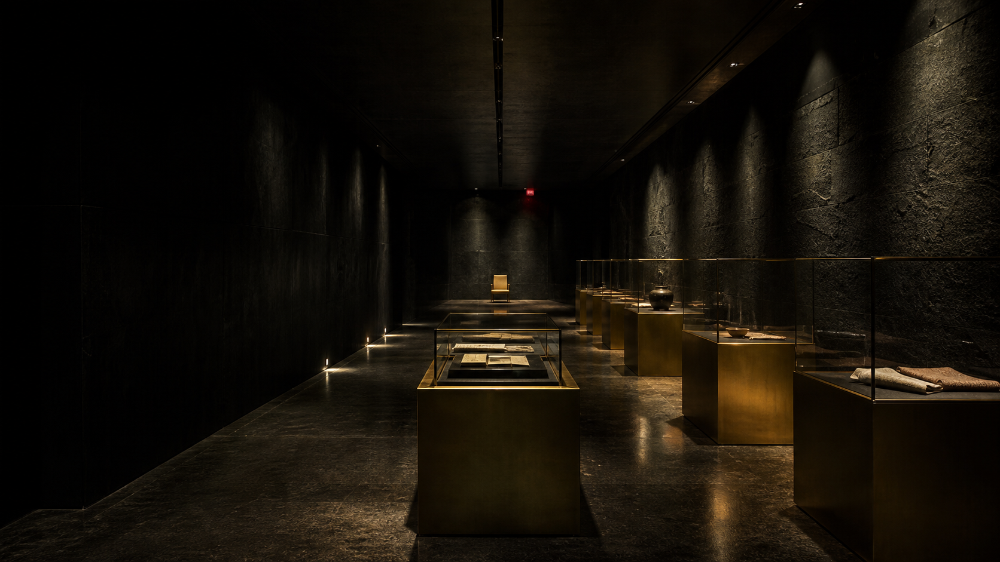

01 / PHYSICAL
物理状態
材質、損傷、修復歴、付着物を非破壊検査。検査前後で重量が変化した品は隔離されます。
影札は1998年に設立された、架空のオンライン競売・保管機関です。所有権だけでなく、記録、責任、説明されなかった出来事を次の保管者へ渡します。
材質、損傷、修復歴、付着物を非破壊検査。検査前後で重量が変化した品は隔離されます。
所有履歴と移動記録を最大三系統で照合。
委託者の証言は音声・文書で二重保管。
説明できない差異を削除せず、商品価値から切り離して公開します。

完全予約制。閲覧は一名ずつ、最大17分。持ち込み機器は受付で封印します。退出時に記憶照合票への記入をお願いしています。
来場時より椅子が一脚増えていても、触れないでください。会員デスクへ